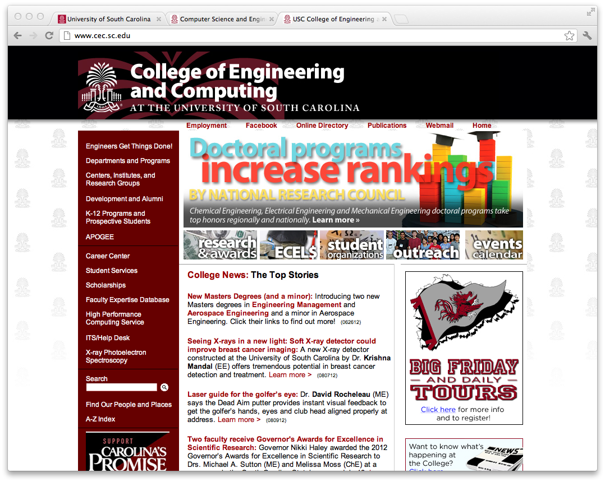

HW1: Tyler Smith
1. What webserver and OS is used by www.sc.edu?
Webserver:
Apache/2.0.52
OS:
Red Hat
2. List all the JavaScript files loaded by www.sc.edu.
AnchorPosition.js
MobileCompatibility.js
brand
default+en.I.js
ga.js
jquery-1.7.1.min.js
jquery.bubbleup.js
jquery.fancybox.pack.js
jsapi
newssummary.js
p7IRMscripts.js
p7hsmscripts.js
rotaterswap.js
p7IRMscripts.js
js file located at http://www.google.com/uds/?file=search&v=1
3. List all the CSS files loaded by www.sc.edu.
default+en.css
jquery.fancybox.css
p7HSM01.css
p7IRM02.css
reset.css
social_media.css
usc0901_800.css
4. List the keys of all the cookies used by www.sc.edu.
__utma
__utmb
__utmc
__utmz
HSID
APISID
SID
NID
PREF
5. In www.sc.edu, for the word "Campuses" on the left-hand menu, what is the margin-top?
Margin-Top:
2px
6. What webserver and CMS is used by www.cse.sc.edu?
Webserver:
Apache/2.2.14(Ubuntu)
CMS:
Drupal
7. Go to www.cec.sc.edu, change the line that says "About the college" (in the top left) to say "Engineers Get Things Done!".
